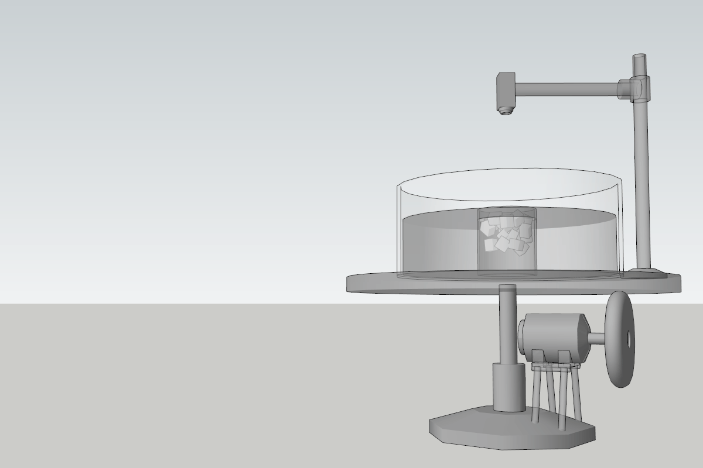
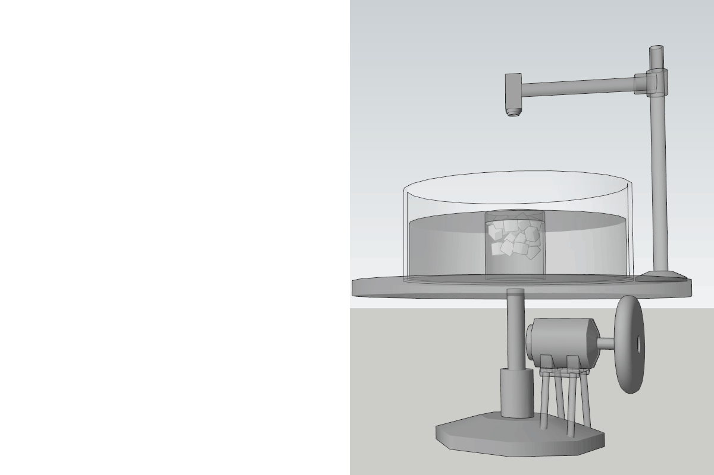
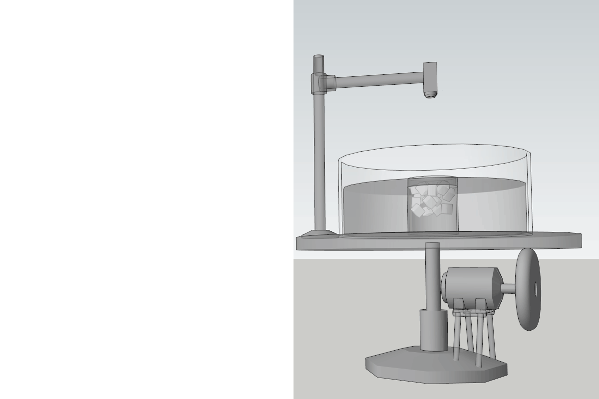
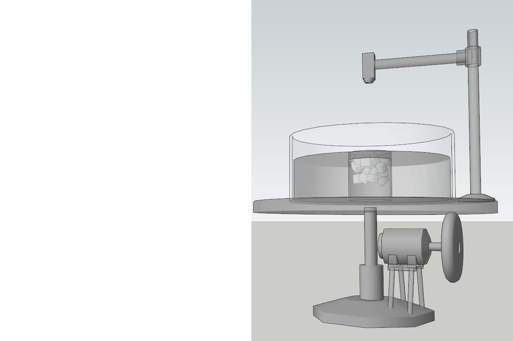

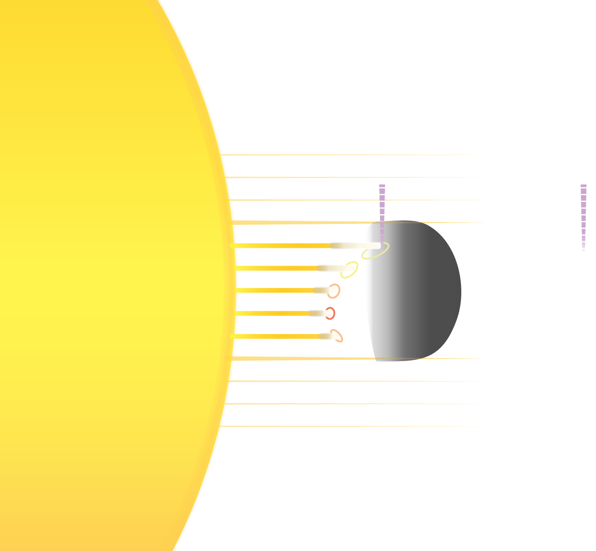
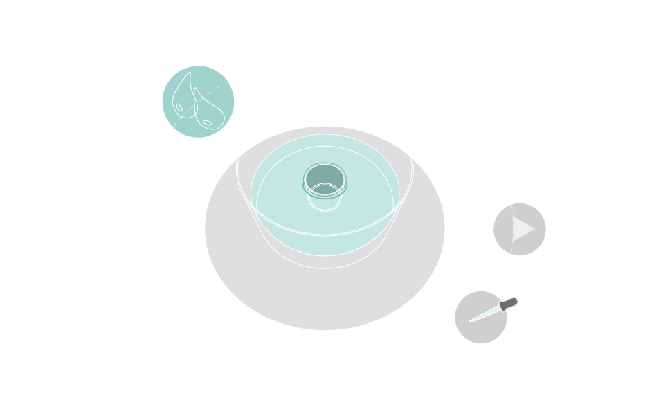
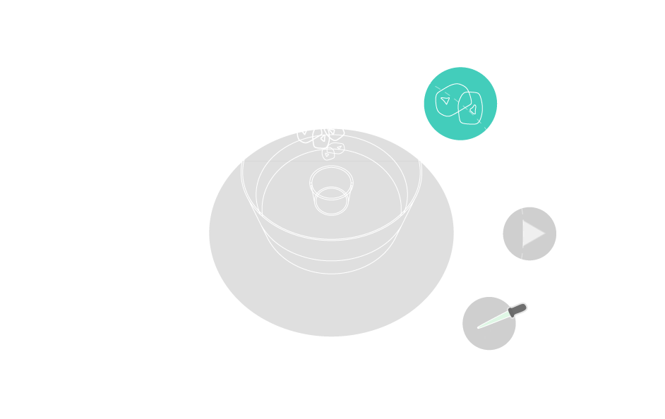
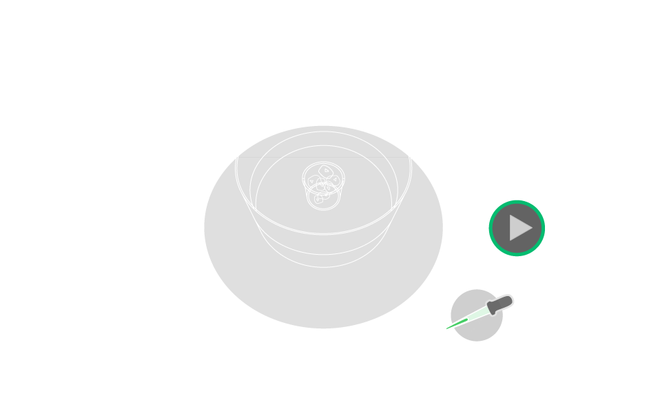

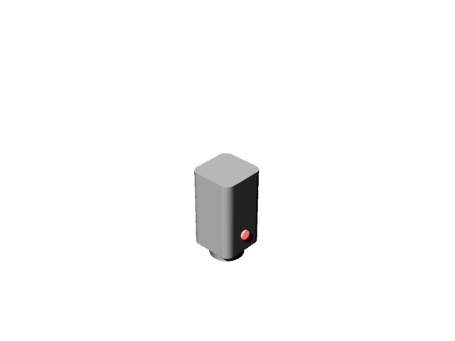

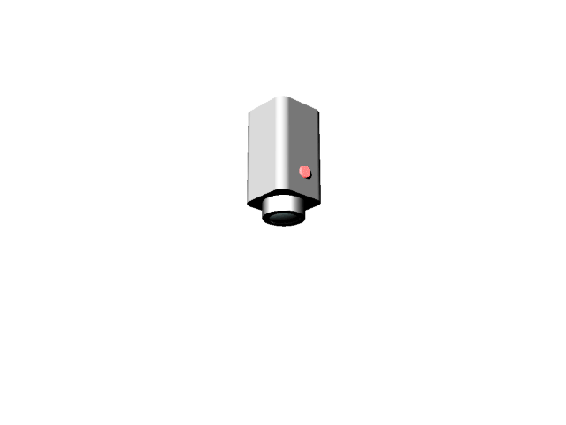


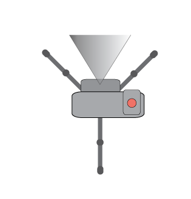
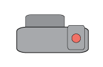


| particles | free surface u | free surface v |
| dyeblob | interior u,v | interior w |
| crystals | vertical u | bottom u,v,w |
| tracer | short time | long time |
|---|


\[\begin{aligned} \frac{\partial u_g}{\partial z} = -\frac{g}{f \rho_0}\hat{z} \times \nabla{\rho} \\ \end{aligned} \] \[\begin{aligned} u_g = \frac{1}{\rho f} \times \nabla{p} \\ \end{aligned} \]
\[\begin{aligned} R_0 = \frac{u}{fL} \\ \end{aligned} \]
\[\begin{aligned} \frac{\partial u}{\partial p} = \frac{R}{fp} \left( \frac{\partial T}{\partial y} \right)_p \end{aligned} \]
\[\begin{aligned} \frac{\partial v}{\partial p} = - \frac{R}{fp} \left( \frac{\partial T}{\partial x} \right)_p \end{aligned} \]

\[\begin{aligned}
\between \\
\end{aligned} \]


| ? | ACTION |
|---|---|
| press ? key | keyboard shortcuts |
| append ?period=n to URL .html | set autoplay period in seconds |
| append ?print-pdf to URL after '.html' | view/save show in pdf-ready format |
!important;
<a href="http://lab.rotating.co/weather/in.html#/tank"> </a>
<tag pink>
<attr green>
<attr value yellow>
<node lgray >
<::selection slategray>
<background dgray>
<< > purple>
{css url() blue}
{css (url) orange}
@import url( http://lab.rotating.co/weather/in.html );
<a href="http://lab.rotating.co/weather/in.html#/tank"> </a>
<tag pink>
<attr green>
<attr value yellow>
<node lgray >
<::selection slategray>
<background dgray>
<< > purple>
{css url() blue}
{css (url) orange}
@import url( http://lab.rotating.co/weather/in.html );